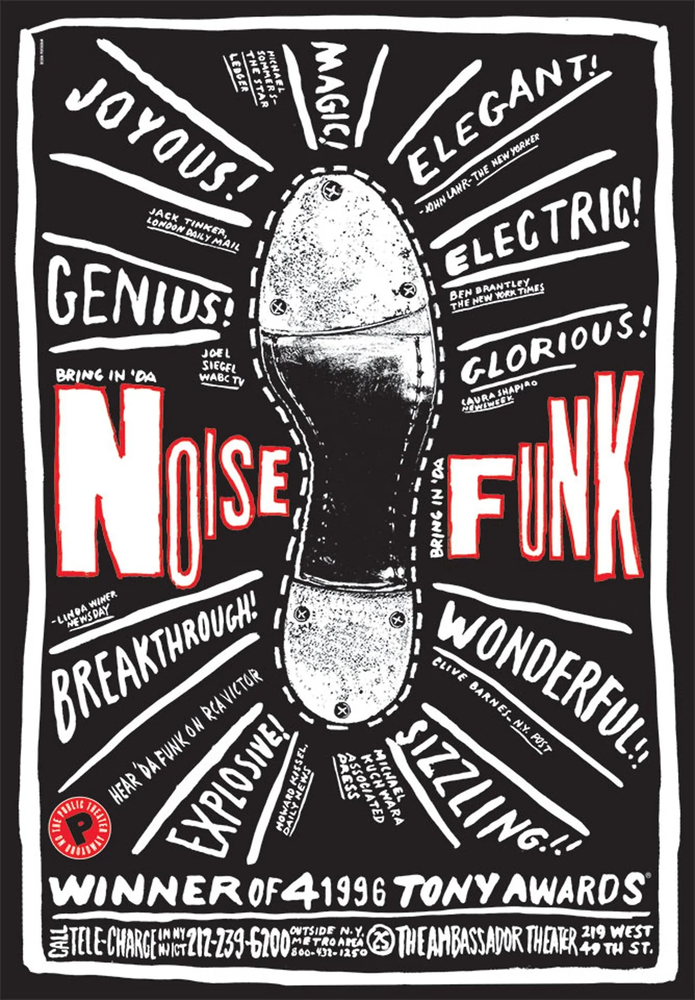
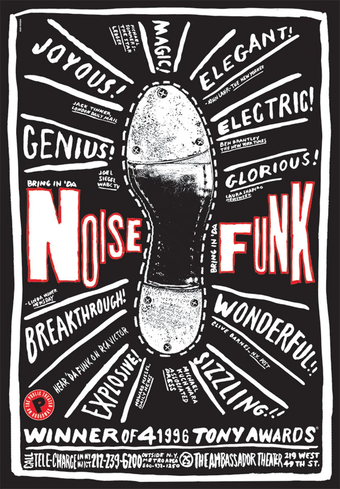

Key Works
Brand identities and Logos
Paula Scher has created some of the most iconic brand logos and identities. She has worked for companies and institutions like Citibank, Microsoft, and the Public Theater. Her designs are bold and instantly recognizable, turning logos and type into something that feels alive and full of personality.
⸻
Public Theater Poster Work
Paula Scher’s posters for The Public Theater in New York during the 1990s and 2000s completely changed how theater could be seen. She used bold typography, bright colors, and a sense of energy that made the posters feel alive and part of the city itself. They didn’t just advertise shows, they grabbed attention and drew people in, reflecting the chaos, excitement, and personality of urban life. That raw, expressive style is why people remember her posters and why they had such an impact.>
 
